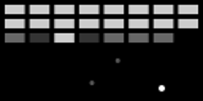

projects
A collection of projects asside from our modules that we have worked on
norns scripts
The following are scripts for the monome nornsSpirals
Breakthrough

Get in the Sea!
ornament and crime hemisphere suite - alternate applets
Mutable Instruments Plaits - i2c support
Allows the pitch, trigger and level of Plaits to be controlled over i2c by our nQuencer module or other modules that support i2c
github